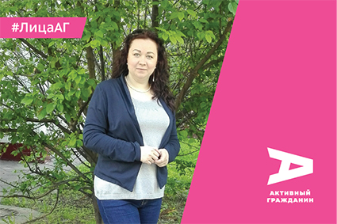
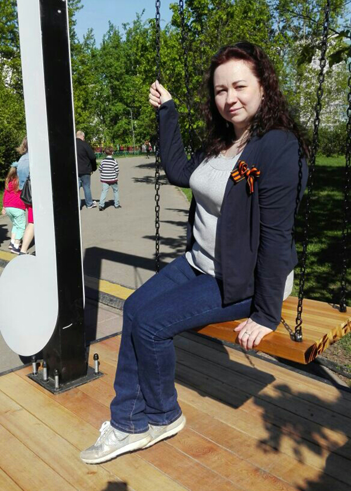

Надо начинать с себя — Евгения Спиченкова об участии в жизни Москвы
03.09.2018
— Евгения, расскажите о себе, чем увлекаетесь, как давно живете в Москве.
— Я — мама, жена, занимаюсь творчеством, рукоделием. Москва — это мой родной город, здесь почти все мои корни. Свой город люблю с детства, как-то так родители привили мне необычайную привязанность к Москве. Знакомиться с родным городом мне нравилось с ранних лет. Когда я училась в педагогическом, даже выбрала направление «Москвоведение». Сейчас в своем блоге я веду рубрику «Познаем Москву вместе». Мне нравится самой узнавать и делиться интересными фактами о городе, заряжать других любовью к Москве.
— Как вы познакомились с проектом «Активный гражданин»? Помните, как и когда это произошло?
— Об «Активном гражданине» я узнала по телевизору на канале «Москва 24», где рассказывали, что есть такой проект, в котором можно участвовать, принимать решения. Я сразу же зарегистрировалась. Если не ошибаюсь, это был сентябрь 2014 года. Не могу сказать, что я прямо сразу же втянулась в процесс голосования, но постепенно я стала заходить каждый день. Сейчас это уже ритуал такой — я зашла, ответила.
— Что больше всего вам нравится в проекте?
— Мне нравится сама идея интересоваться мнением горожан, что мнение людей, которые живут в этом городе, важно. Мне очень нравится, что в каждом голосовании можно написать свои наблюдения, свои какие-то идеи. Если я, к примеру, не могу выбрать что-то из предложенных вариантов, я могу внести свое предложение. Это, я считаю, особенно ценно! Я всегда стараюсь вдумываться в вопрос, обязательно читаю справочную информацию в разделе «Подробнее». Признаюсь, почти никогда не читаю мнения экспертов, чтобы они не повлияли на мое решение. Я всегда основываюсь на своем мнении.

— Какие темы голосований вам больше всего нравятся?
— Очень люблю голосования, в которых мы выбираем дизайн станций метро. Интересно было выбирать логотип парка «Зарядье». Очень люблю программу «Моя улица», благоустройство парков.
Еще мне очень понравилась викторина по итогам голосований. Она проходила в четыре этапа. И эта викторина стала показателем серьезности всего проекта «Активный гражданин». Было интересно себя проверить, насколько мы были внимательны, вдумчивы и активны.
— Что касается результатов работы по итогам голосований. Отмечаете ли вы их, следите за тем, чтобы все было реализовано в точности, как активные граждане выбрали?
— Я поначалу не относилась к этому внимательно, а потом, когда все больше и больше стала принимать участие в голосованиях, начала отслеживать, что и как меняется. Сейчас я обязательно читаю все отчеты о проделанной работе, изучаю все эти не всегда интересные цифры, проценты. Но они показывают наглядно, что же на самом деле люди выбрали, какое решение приняли. Люди какого возраста — больше молодежи или людей старшего поколения — повлияли на выбор такого-то названия, на появление новых деревьев или лавочек в сквере. Я внимательно слежу за результатами проекта.
— Вы себя считаете человеком с активной гражданской позицией? И если да, то как вы ее проявляете?
— Я очень люблю агитировать людей, стараюсь своим примером показать, что можно и нужно решать проблемы: иногда написать, позвонить в управляющую компанию.
Вот мы переехали в другой район Москвы, и первое время были поражены подъездом дома, в котором купили квартиру. У меня муж говорит: «Я не пойму вообще, вроде бы спокойные соседи, но в подъезде мусор, грязь. Откуда?». Мы пытались с соседями поговорить, повесили объявление с просьбой не сорить — не помогло. Пошли к участковому и сказали: «Вы знаете, не помогает, что еще сделать?». Слава богу, сейчас уже месяц у нас на площадке чисто, не накурено, бычков не разбросано, люди убирают за собой.
Мне много раз говорили, и в управляющих компаниях в том числе, что если хотите жить, как в Швейцарии, езжайте в Швейцарию. А я уверена, что порядок и чистота в городе начинается с нас. Как мы хотим жить, так и будет, но для этого нужно делать самому что-то, нужно не бояться самой поднять бумажку и выбросить в урну.
Этому я учу своего ребенка, что нельзя равнодушно проходить мимо. Ничего нет зазорного в том, что мы сделали кормушку и повесили ее у своего подъезда зимой, чтобы кормить птиц. Нет ничего стыдного, если мы пришли на детскую площадку и убрали мусор, который там недобропорядочные граждане оставили. Я поняла, что ждать кого-то, кто изменит наше окружение, — это лишняя трата времени, нужно действовать самим. Поэтому я всегда всем говорю — сделайте сами, это не сложно, это не трудно, это не стыдно. Начинать надо с себя.
— Своим родным и знакомым рассказываете о проекте «Активный гражданин»?
— Да, конечно! Я сначала просто на словах говорила о том, что это прекрасная возможность высказать свое мнение, замечательная возможность даже просто узнать о том, что есть в Москве, чем живет город. Я не боюсь в соцсетях рассказывать о том, что я приняла участие в таком-то опросе.
А уж когда я стала обменивать заработанные баллы на поощрительные призы, люди стали сами спрашивать — а что такое «Активный гражданин»? У меня появились два зонта, толстовка, термокружка, спортивная бутылка для воды, монопод. Рюкзак «Активный гражданин» у меня уже много лет, в каких путешествиях только не был! Даже в других городах ко мне люди подходили и спрашивали: «А что это у вас за надпись, это какое-то движение?». И когда я рассказываю, что в Москве есть такой проект об улучшении жизни в городе, многие кивают одобрительно и говорят, что им тоже такой нужен.
— Как вы считаете, почему важно привлекать в проект все больше участников?
— Я уверена, что привлекать нужно. Потому что, во-первых, всегда есть процент людей, которым наскучивает участие по разным причинам. А во-вторых, это важно для баланса интересов. Ведь та же молодежь вырастает, у нее какие-то другие интересы появляются. К примеру, вчера она была студенткой, а сегодня уже, например, стала мамой. Я точно знаю, что ее приоритеты и интересы изменятся. Со временем мы меняемся, набираемся жизненного опыта. Чем больше участников, тем больше мнений.
— Как вы считаете, чем можно дополнить или что изменить в проекте «Активный гражданин»?
— Я знаю, что есть люди, которые готовы участвовать более активно, не просто отвечать на вопросы в приложении. Поэтому, если бы в проекте была такая вот возможность — предложить свою идею, свою тему голосования, было бы здорово.
— За что вы любите Москву?
— Наш город я люблю за многообразие. Это город, который в себе очень удачно совмещает разные эпохи, разные религии, это гостеприимный город. С каждым годом я люблю Москву все больше за то, как она меняется. А меняется она благодаря людям, которые живут здесь. Был период, когда Москва была грязная, агрессивная, неприветливая. Но мы всеми нашими силами стремимся к лучшему, и сейчас люди, которые к нам приезжают, все более тепло отзываются о москвичах, о самом городе, о том, как все в нем удобно и понятно. Я люблю город за краски, за старину, за мудрость. Я горжусь, что живу в Москве.
— Что вы пожелаете Москве и москвичам?
— Москве пожелаю развития, процветания и активных граждан. А самим активным гражданам желаю быть ответственными, смелыми и здоровыми.